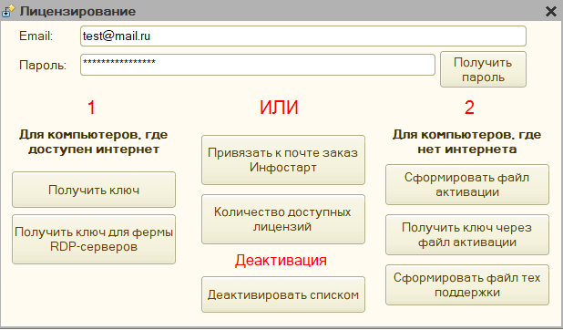
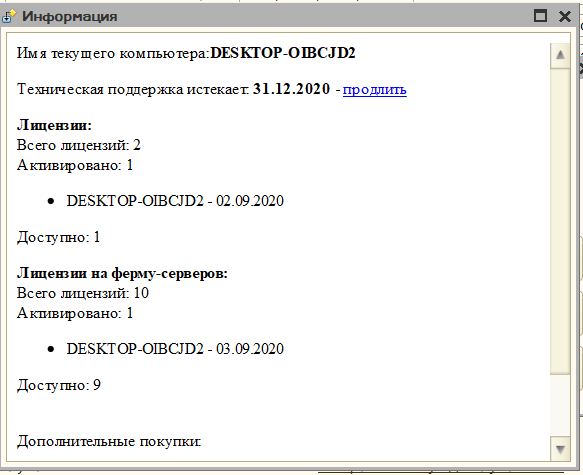
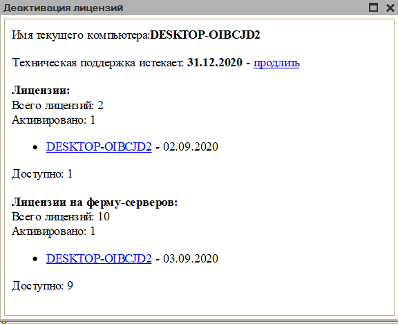
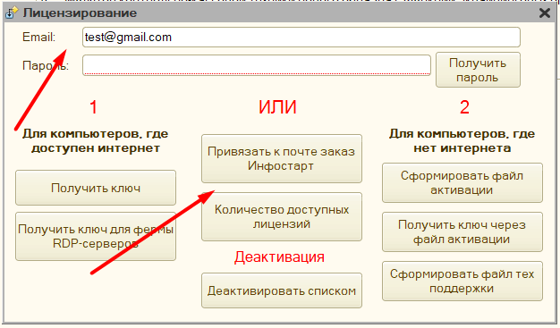

Лицензирование¶
Обработка использует 3 режима: «Демо», «Лицензия» и «Лицензия на ферму RDP-серверов»
«Демо» - позволяет использовать полный функционал обработки, отличается от «Лицензия» и «Лицензия на ферму RDP-серверов» тем, что при печати присутствует задержка с информационным окном о том, что используется демоверсия, а также есть ограничение на количество операций для одного пользователя.
«Лицензия» - полноценная работа с обработкой без искусственных задержек и ограничений. Лицензия бессрочная, продлевать ее не нужно.
«Лицензия на ферму RDP-серверов» - полноценная лицензия, для частных случаев, когда работа происходит по RDP, однако при этом используется несколько компьютеров-серверов, и при переподключении пользователь может подключиться уже к другому компьютеру, например, такой функционал обычно используется для сервисов, что предоставляют 1с в аренду (1C fresh).
Для режимов «Лицензия» и «Лицензия на ферму RDP-серверов», необходимо приобрести лицензию на программу, и активировать ее по инструкции. Обратите внимание, 1 ключ может работать только на 1-м рабочем месте, если лицензию нужно переактивировать, то нужно вначале «Деактивировать» первую лицензию через меню обработки, а затем заново получить лицензию на другом рабочем месте.
Возможные спорные ситуации:
-
1С находится на сервере, и пользователи подключаются к ней через установленную на своем компьютере 1С, необходимо приобрести столько лицензий сколько компьютеров использует обработку.
-
1С находится на сервере, и пользователи подключаются к ней через RemoteAPP, тогда необходимо приобрести только 1 лицензию на сервер
-
1С находится на сервере, и пользователи подключаются к ней через RDP, тогда необходимо приобрести только 1 лицензию на сервер
Видеоинструкция по активации лицензии: Активация лицензии
Особенность получения обновлений и технической поддержки¶
Все обновления привязаны к технической поддержки пользователя. Обработка сверяет дату ее окончания, и, если версия не соответствует - переключает работу в демо-режим. Не стоит беспокоиться, что вы не сможете получить версию, которая вам доступна. Через форму обработки теперь можно получить все необходимые файлы для работы, при этом можно получить и доступные предыдущие версии.
Важно, все купленные лицензии закрепляются за тем email, что был указан при покупке, и потому техническая поддержка оказывается не на купленную лицензию, а на указанный email, поэтому при первоначальной покупки лицензии, техническая поддержка автоматически устанавливается на 2 месяца, однако если в последствии на этот email будут приобретать дополнительные лицензии, то техническая поддержка уже не будет продлена, и нужно приобретать позицию именно с технической поддержкой.
Дату окончания технической поддержки можно проверить через параметры обработки. Без технической поддержки консультации по программе не оказываются.
Форма лицензирования¶
Доступ к форме лицензирования осуществляется через параметры обработки, раздел "Ручное управление" - "Лицензирование", либо через форму первоначальной настройки, если ранее обработка не приобреталась.

Если лицензия была оплачена через сайт "Инфостарт", то первоначально заказ нужно прикрепить к своей учетной записи, укажите в поле Email свою почту и нажмите "Привязать к почте заказ Инфостарт", в открывшемся окне заполните номер заказа. Пароль для учетной записи запрашивается уже после привязки лицензии.
Для использования формы лицензирования необходимо вначале получить пароль для указанного email, для этого нажмите "Получить пароль", в течение 5-ти минут должен прийти пароль на указанную почту, если письма нет, то проверьте папку "СПАМ", скорее всего письмо попало туда. Пароль для указанной почты один и не меняется, даже если приобретено несколько лицензий.
Форма лицензирования позволяет:
- по кнопке "Количество доступных лицензий" - узнать, когда истекает техническая поддержка, сколько приобретено лицензий, и на каких компьютерах они активированы

- по кнопке "Деактивировать списком", можно выбрать нужные лицензии для деактивации, обратите внимание, что есть ограничение на количество деактиваций в день - оно равно количеству приобретенных лицензий.

Деактивация лицензии происходит, если нажать на имя соответствующего компьютера.
- по кнопке "Сформировать файл технической поддержки", можно получить файл тех поддержки, который необходимо указать в параметрах обработки поле "путь к файлу технической поддержки". Он необходим на случае, если не доступен интернет или есть периодические обрывы связи, для проверки, что данная версия обработки доступна для использования. Для формирования файла нужен доступ к интернету, он одинаков для всех лицензий активированных на одну учетную запись. После получения файла, его необходимо перенести на тот компьютер, где активирована лицензия.
- кнопки "Сформировать файл активации" и "Получить ключ через файл активации" используются, если на компьютере, где будет использована лицензия нет интернета. На том компьютере необходимо запустить обработки и в данном меню выбрать "Сформировать файл активации", обработка пропишет в файл информацию необходимую для активации через интернет, после необходимо взять этот файл и на компьютере, где есть интернет запустить также обработку и нажать "Получить ключ через файл активации" и указать сформированный файл - будет получен ключ для рабочего места без интернета. После останется только перенести этот ключ на указанное рабочее место.
- кнопка "Получить ключ" - активирует лицензию для текущего рабочего места, и сохраняет ее в указанный каталог. >Важно: для использования, файл лицензии должен быть доступен, иначе программа будет считать, что ключ не активирован. На доступность может влиять права пользователя Windows на этот каталог, а также если файл лицензии заблокирован другим приложением
- кнопка "Получить ключ для фермы RDP-серверов" - формирует общий ключ для фермы RDP-серверов. >Важно: если используется ферма RDP-серверов, то доступ к интернету должен быть обязательно, если на сервере используется прокси, то его нужно будет настроить в параметрах обработки, чтобы связь не обрывалась.
Общий порядок действий после покупки¶
- откройте форму лицензирования
- укажите email
- нажмите получить пароль
- откройте свою почту - скопируйте пароль, и вставьте его в поле пароль формы лицензирования
- если программа приобреталась через сайт Инфостарт, то порядок активации описан здесь
- если есть Интернет:
- на рабочем месте нажмите Получить ключ и укажите место для сохранения ключа.
- если Интернета нет:
- на текущем рабочем месте нажмите сформировать файл активации
- полученный файл скопируйте на компьютер с Интернетом
- откройте форму лицензирования
- нажмите "Получить ключ через файл активации" и укажите путь к файлу активации с первого компьютера
- нажмите "Сформировать файл технической поддержки"
- файл технической поддержки и ключ скопируйте на компьютер без интернета
- в параметрах обработки укажите путь к ключу, и путь к файлу технической поддержки.
- используйте лицензионную программу
Написать разработчику¶
Данные команды доступна через параметры программа "Ручное управление" - "Написать разработчику". Она позволяет связаться с автором программы: задать вопрос или отправить пожелание по разработке. Заполните email, и ранее полученный пароль - укажите текст вопроса и после нажмите "Отправить". Ответ разработчика придет на указанную почту.

Как записать лог для технической поддержки?¶
Для проверки работы программа, можно сохранять дополнительную информацию о пробитие чека в специальный файл "Лог" (технологический журнал). Для того чтобы включить логирование, необходимо в параметрах программы на закладке Служебное нажать "Использовать логирование ККТ", и указать путь к папке лога. Местом для сохранения лога может быть любой каталог, однако у текущего пользователя Windows должны быть права на запись в эту папку.
После этого необходим перезапустить 1С. Далее перед печатью чека программа автоматически создаст файл лога, соответствующий текущему дню, и станет вести подробный журнал ведения фискальных операций, в последствие эту информацию можно будет использовать для сверки, правильная ли информация поступает на фискальный регистратор. В лог записывается также содержимое фискального чека, в том числе и фискальный признак. При этом данный файл можно анализировать самостоятельно, либо отправить технической поддержке, если она запросит.
Обратите внимание, что данный лог отличается от лога, что можно включить на самой ККТ, в текущем технологическом журнале будет записана работа только текущей программы, и она не связана с тонкостями работы той или иной модели ККТ.
Особенность активации Инфостарт¶
Одним из магазинов, где представлена программа является "Инфостарт". С ним есть ряд сложностей по активации лицензии: После покупки разработчику не предоставляется данные об адресе почты покупателя, и потому автоматическое прикрепление заказов не работает. В связи с этим, для активации программного продукта клиенту необходимо самостоятельно прикрепить заказ с сайта к своей почте.
- в форме первоначальной настройки нажмите Получить ключ - откроется форма лицензирования (либо через параметры - "Ручное управление" - "Лицензирование", если программа у вас уже работает на данный момент);
-
укажите адрес электронной почты, при этом "пароль" заполнять не нужно.

-
нажмите Привязать к почте заказ Инфостарт, и укажите номер заказа на сайте
- нажмите кнопку ОК
- заказ будет прикреплен к той почте, что вы указали (если появляется сообщение, что заказ не найден в базе, это значит, что он еще не получил статус "оплачен", либо вы ошиблись в номере заказа, в остальных же случаях нужно обращаться в тех поддержку.)
После этого воспользуйтесь основной инструкцией по активации лицензии.
Обратите внимание, что если вы прикрепляете заказ, в котором была покупка лицензии, к почте, на которой уже были другие заказы, то техническая поддержка не будет продлена. Она останется на дату первой покупки. Чтобы получить актуальные обновления необходимо дополнительно приобрести продление тех поддержки, либо указать другой адрес электронной почты, на который еще нет заказов, при этом тех поддержка активируется на 2 месяца автоматически, это описано также в разделе Особенности получения обновлений